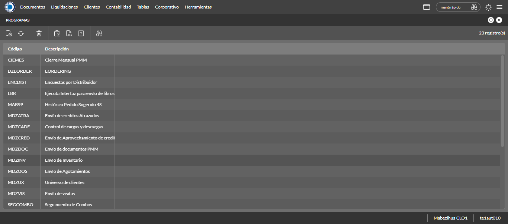
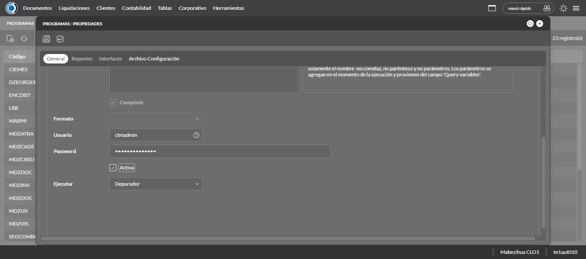
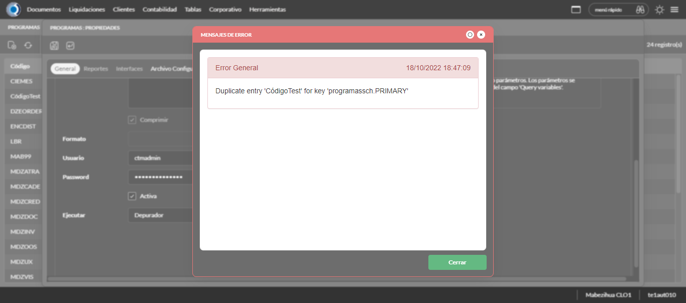
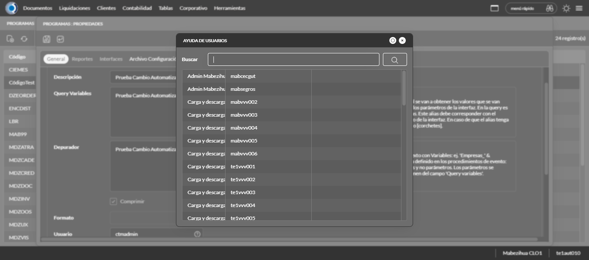

Desarrollado por : Area de Testing PWST
Fecha y hora de inicio : 2022-10-18 13:44:14
Duracion : 0:03:58.616411
Resultado : Total 8，Correctos 5 ，Errores 3 ，Taza de resultado 62.50%
Resumen 62.50% Errores 3 Fallidos 0 Correctos 5 Test realizados 8
| Caso de Prueba | Total | Correctos | Fallido | Error | Detalles | Captura del error |
| ProgramaScheduler3.Test: Escenario 1 de Programa Scheduler 3 | 8 | 5 | 0 | 3 | Detalles | |
test |
pt1_1: 2022-10-18 13:44:15,923 - root - INFO - Se abre el chrome
2022-10-18 13:44:17,189 - root - INFO - Entra a la URL
2022-10-18 13:44:17,304 - root - INFO - Maximiza la pantalla
2022-10-18 13:44:20,345 - root - INFO - Cambia al frame
|
|
||||
test_000: Ingresa a la base de datos |
pt1_2: 2022-10-18 13:44:23,431 - root - INFO - Escribe el usuario
2022-10-18 13:44:23,505 - root - INFO - Escribe la contraseña
2022-10-18 13:44:23,602 - root - INFO - Se dio clic en el boton ingresar
2022-10-18 13:44:24,328 - root - INFO - Ejecutar Enterprise
2022-10-18 13:44:28,396 - root - INFO - Cambia entre pestañas
|
|
||||
test_001: Abre menu y ejecuta pantalla |
pt1_3: 2022-10-18 13:45:01,351 - root - INFO - Abre la pantalla de Programas
2022-10-18 13:45:01,404 - root - INFO - La pantalla ejecutada es Programas.
2022-10-18 13:45:04,421 - root - INFO - Captura: C:\xampp\htdocs\versiones\automatizaciones\AutoPWST\03PSCH\report\img screen：20221018_13_45_04.png
2022-10-18 13:45:04,586 - root - INFO - Se presiona el boton 'Nuevo', para crear un nuevo registro.
|
 | ||||
test_002: Abre la ventana de nuevo y crear un registro |
pt1_4: 2022-10-18 13:45:09,643 - root - INFO - Se abrio la pantalla para el ingreso de un registro nuevo.
2022-10-18 13:45:09,680 - root - INFO - El campo 'Código' si se encuentra visible.
2022-10-18 13:45:09,716 - root - INFO - El campo 'Descripción' si se encuentra visible.
2022-10-18 13:45:09,755 - root - INFO - El campo 'Query Variables' si se encuentra visible.
2022-10-18 13:45:09,793 - root - INFO - El campo 'Usuario' si se encuentra visible.
2022-10-18 13:45:09,829 - root - INFO - El campo 'Password' si se encuentra visible.
2022-10-18 13:45:09,870 - root - INFO - El campo 'Activa' si se encuentra visible.
2022-10-18 13:45:09,910 - root - INFO - El campo 'Ejecutar' si se encuentra visible.
2022-10-18 13:45:09,970 - root - INFO - Ingresa el Codigo del nuevo registro
2022-10-18 13:45:13,076 - root - INFO - Ingresa la Descripcion del nuevo registro
2022-10-18 13:45:16,189 - root - INFO - Ingresa los Query Variables del nuevo registro
2022-10-18 13:45:24,306 - root - INFO - Se dió click en el botón espacio para mover la pantalla hacía abajo
2022-10-18 13:45:36,702 - root - INFO - Se dió click en la opción Depurador.
2022-10-18 13:45:39,769 - root - INFO - El campo 'Depurador' si se encuentra visible.
2022-10-18 13:45:39,852 - root - INFO - Ingresa el Depurador del nuevo registro
2022-10-18 13:45:50,279 - root - INFO - Se dió doble click en el registro de Usuario.
2022-10-18 13:45:53,389 - root - INFO - Ingresa el Password del nuevo registro
2022-10-18 13:45:59,488 - root - INFO - Se dió click en el checkbox Activa.
2022-10-18 13:45:59,489 - root - INFO - Captura: C:\xampp\htdocs\versiones\automatizaciones\AutoPWST\03PSCH\report\img screen：20221018_13_45_59.png
2022-10-18 13:45:59,645 - root - INFO - Se cambia a la Pestaña Archivo de Conficuración para continuar con el registro nuevo
2022-10-18 13:46:02,752 - root - INFO - Ingresa la configuracion del nuevo registro
2022-10-18 13:46:05,852 - root - INFO - Se da clic en el boton Guardar; se debe crear un nuevo registro.
|
 | ||||
test_003: Repetir el registro creado anteriormente |
pt1_5: 2022-10-18 13:46:10,930 - root - INFO - Se presiona el boton 'Refrescar', para crear un nuevo registro igual al anterior.
2022-10-18 13:46:16,015 - root - INFO - Se presiona el boton 'Nuevo', para crear un nuevo registro igual al anterior.
2022-10-18 13:46:21,070 - root - INFO - Se abrio la pantalla para el ingreso de un registro nuevo.
2022-10-18 13:46:21,111 - root - INFO - El campo 'Código' si se encuentra visible.
2022-10-18 13:46:21,145 - root - INFO - El campo 'Descripción' si se encuentra visible.
2022-10-18 13:46:21,179 - root - INFO - El campo 'Query Variables' si se encuentra visible.
2022-10-18 13:46:21,220 - root - INFO - El campo 'Usuario' si se encuentra visible.
2022-10-18 13:46:21,253 - root - INFO - El campo 'Password' si se encuentra visible.
2022-10-18 13:46:21,295 - root - INFO - El campo 'Activa' si se encuentra visible.
2022-10-18 13:46:21,333 - root - INFO - El campo 'Ejecutar' si se encuentra visible.
2022-10-18 13:46:21,388 - root - INFO - Ingresa el Codigo del nuevo registro
2022-10-18 13:46:24,487 - root - INFO - Ingresa la Descripcion del nuevo registro
2022-10-18 13:46:27,592 - root - INFO - Ingresa los Query Variables del nuevo registro
2022-10-18 13:46:35,697 - root - INFO - Se dió click en el botón espacio para mover la pantalla hacía abajo
2022-10-18 13:46:46,100 - root - INFO - Se dió click en la opción Depurador.
2022-10-18 13:46:49,165 - root - INFO - El campo 'Depurador' si se encuentra visible.
2022-10-18 13:46:49,248 - root - INFO - Ingresa el Depurador del nuevo registro
2022-10-18 13:46:59,670 - root - INFO - Se dió doble click en el registro de Usuario.
2022-10-18 13:47:02,782 - root - INFO - Ingresa el Password del nuevo registro
2022-10-18 13:47:05,872 - root - INFO - Se dió click en el checkbox Activa.
2022-10-18 13:47:08,952 - root - INFO - Se da clic en el boton Guardar; No se debe crear un nuevo registro.
2022-10-18 13:47:13,953 - root - INFO - Captura: C:\xampp\htdocs\versiones\automatizaciones\AutoPWST\03PSCH\report\img screen：20221018_13_47_13.png
2022-10-18 13:47:14,137 - root - INFO - Se presiona el boton 'Cerrar', para cerrar el mensaje de duplicidad de llave primaria
2022-10-18 13:47:17,224 - root - INFO - Se presiona el boton 'Cerrar', para cerrar la ventana
|
 | ||||
test_004: Modificar el registro |
ft1_6: 2022-10-18 13:47:21,317 - root - INFO - Se presiona el boton 'Refrescar', para proceder a modificar el registro.
2022-10-18 13:47:33,932 - root - INFO - Se da clic en el registro creado, para proceder a modificarlo.
2022-10-18 13:47:34,060 - root - INFO - Se modifica el contenido del campo Descripción
2022-10-18 13:47:37,177 - root - INFO - Se modifica el contenido del campo Query Variables
2022-10-18 13:47:45,283 - root - INFO - Se dió click en el botón espacio para mover la pantalla hacía abajo
2022-10-18 13:47:55,683 - root - INFO - Se dió click en la opción Depurador.
2022-10-18 13:47:58,813 - root - INFO - Se modifica el contenido del campo Depurador
2022-10-18 13:48:06,941 - root - ERROR - No se encontró el registro de Usuario, validar que la acción anterior haya finalizado, que el xpath sea el correcto o que la página no presente lentitud
2022-10-18 13:48:09,944 - root - INFO - Captura: C:\xampp\htdocs\versiones\automatizaciones\AutoPWST\03PSCH\report\img screen：20221018_13_48_09.png
Traceback (most recent call last):
File "C:\xampp\htdocs\versiones\automatizaciones\AutoPWST\03PSCH\testCase\ProgramaScheduler3.py", line 54, in test_004
return modificarregistro.modificarregistro(self)
File "C:\xampp\htdocs\versiones\automatizaciones\AutoPWST\03PSCH\testCase\modificarregistro.py", line 183, in modificarregistro
registro_usuario = self.driver.find_element(By.XPATH, "//span[text()='mabadmin']")
File "C:\Users\PWST\AppData\Local\Programs\Python\Python310\lib\site-packages\selenium\webdriver\remote\webdriver.py", line 1251, in find_element
return self.execute(Command.FIND_ELEMENT, {
File "C:\Users\PWST\AppData\Local\Programs\Python\Python310\lib\site-packages\selenium\webdriver\remote\webdriver.py", line 430, in execute
self.error_handler.check_response(response)
File "C:\Users\PWST\AppData\Local\Programs\Python\Python310\lib\site-packages\selenium\webdriver\remote\errorhandler.py", line 247, in check_response
raise exception_class(message, screen, stacktrace)
selenium.common.exceptions.NoSuchElementException: Message: no such element: Unable to locate element: {"method":"xpath","selector":"//span[text()='mabadmin']"}
(Session info: chrome=106.0.5249.119)
Stacktrace:
Backtrace:
Ordinal0 [0x00261ED3+2236115]
Ordinal0 [0x001F92F1+1807089]
Ordinal0 [0x001066FD+812797]
Ordinal0 [0x001355DF+1005023]
Ordinal0 [0x001357CB+1005515]
Ordinal0 [0x00167632+1209906]
Ordinal0 [0x00151AD4+1120980]
Ordinal0 [0x001659E2+1202658]
Ordinal0 [0x001518A6+1120422]
Ordinal0 [0x0012A73D+960317]
Ordinal0 [0x0012B71F+964383]
GetHandleVerifier [0x0050E7E2+2743074]
GetHandleVerifier [0x005008D4+2685972]
GetHandleVerifier [0x002F2BAA+532202]
GetHandleVerifier [0x002F1990+527568]
Ordinal0 [0x0020080C+1837068]
Ordinal0 [0x00204CD8+1854680]
Ordinal0 [0x00204DC5+1854917]
Ordinal0 [0x0020ED64+1895780]
BaseThreadInitThunk [0x763A7BA9+25]
RtlInitializeExceptionChain [0x774BBB3B+107]
RtlClearBits [0x774BBABF+191]
(No symbol) [0x00000000]
|
 | ||||
test_005: Eliminar el registro creado |
ft1_7: 2022-10-18 13:48:10,335 - root - ERROR - No se dió click en el botón Refrescar, validar que la acción anterior haya finalizado, que el xpath sea el correcto o que la página no presente lentitud
2022-10-18 13:48:13,349 - root - INFO - Captura: C:\xampp\htdocs\versiones\automatizaciones\AutoPWST\03PSCH\report\img screen：20221018_13_48_13.png
Traceback (most recent call last):
File "C:\xampp\htdocs\versiones\automatizaciones\AutoPWST\03PSCH\testCase\eliminarregistro.py", line 21, in eliminarregistro
Refresca3 = self.wait.until(conditions.visibility((By.XPATH, Configuracion.btn_Refresca)))
File "C:\Users\PWST\AppData\Local\Programs\Python\Python310\lib\site-packages\selenium\webdriver\support\wait.py", line 78, in until
value = method(self._driver)
File "C:\Users\PWST\AppData\Local\Programs\Python\Python310\lib\site-packages\selenium\webdriver\support\expected_conditions.py", line 125, in _predicate
return _element_if_visible(driver.find_element(*locator))
File "C:\Users\PWST\AppData\Local\Programs\Python\Python310\lib\site-packages\selenium\webdriver\remote\webdriver.py", line 1251, in find_element
return self.execute(Command.FIND_ELEMENT, {
File "C:\Users\PWST\AppData\Local\Programs\Python\Python310\lib\site-packages\selenium\webdriver\remote\webdriver.py", line 430, in execute
self.error_handler.check_response(response)
File "C:\Users\PWST\AppData\Local\Programs\Python\Python310\lib\site-packages\selenium\webdriver\remote\errorhandler.py", line 247, in check_response
raise exception_class(message, screen, stacktrace)
selenium.common.exceptions.InvalidSessionIdException: Message: invalid session id
Stacktrace:
Backtrace:
Ordinal0 [0x00261ED3+2236115]
Ordinal0 [0x001F92F1+1807089]
Ordinal0 [0x001065C0+812480]
Ordinal0 [0x0012A3FD+959485]
Ordinal0 [0x0012B71F+964383]
GetHandleVerifier [0x0050E7E2+2743074]
GetHandleVerifier [0x005008D4+2685972]
GetHandleVerifier [0x002F2BAA+532202]
GetHandleVerifier [0x002F1990+527568]
Ordinal0 [0x0020080C+1837068]
Ordinal0 [0x00204CD8+1854680]
Ordinal0 [0x00204DC5+1854917]
Ordinal0 [0x0020ED64+1895780]
BaseThreadInitThunk [0x763A7BA9+25]
RtlInitializeExceptionChain [0x774BBB3B+107]
RtlClearBits [0x774BBABF+191]
(No symbol) [0x00000000]
During handling of the above exception, another exception occurred:
Traceback (most recent call last):
File "C:\xampp\htdocs\versiones\automatizaciones\AutoPWST\03PSCH\testCase\ProgramaScheduler3.py", line 58, in test_005
return eliminarregistro.eliminarregistro(self)
File "C:\xampp\htdocs\versiones\automatizaciones\AutoPWST\03PSCH\testCase\eliminarregistro.py", line 32, in eliminarregistro
self.driver.get_screenshot_as_file(img_name)
File "C:\Users\PWST\AppData\Local\Programs\Python\Python310\lib\site-packages\selenium\webdriver\remote\webdriver.py", line 1322, in get_screenshot_as_file
png = self.get_screenshot_as_png()
File "C:\Users\PWST\AppData\Local\Programs\Python\Python310\lib\site-packages\selenium\webdriver\remote\webdriver.py", line 1358, in get_screenshot_as_png
return b64decode(self.get_screenshot_as_base64().encode('ascii'))
File "C:\Users\PWST\AppData\Local\Programs\Python\Python310\lib\site-packages\selenium\webdriver\remote\webdriver.py", line 1370, in get_screenshot_as_base64
return self.execute(Command.SCREENSHOT)['value']
File "C:\Users\PWST\AppData\Local\Programs\Python\Python310\lib\site-packages\selenium\webdriver\remote\webdriver.py", line 430, in execute
self.error_handler.check_response(response)
File "C:\Users\PWST\AppData\Local\Programs\Python\Python310\lib\site-packages\selenium\webdriver\remote\errorhandler.py", line 247, in check_response
raise exception_class(message, screen, stacktrace)
selenium.common.exceptions.InvalidSessionIdException: Message: invalid session id
Stacktrace:
Backtrace:
Ordinal0 [0x00261ED3+2236115]
Ordinal0 [0x001F92F1+1807089]
Ordinal0 [0x001065C0+812480]
Ordinal0 [0x0012A1CB+958923]
Ordinal0 [0x00151980+1120640]
Ordinal0 [0x0014E9A6+1108390]
Ordinal0 [0x0014E518+1107224]
Ordinal0 [0x000E5517+677143]
Ordinal0 [0x000E5B83+678787]
Ordinal0 [0x000E5FBA+679866]
GetHandleVerifier [0x0050E7E2+2743074]
GetHandleVerifier [0x005008D4+2685972]
GetHandleVerifier [0x002F2BAA+532202]
GetHandleVerifier [0x002F1990+527568]
Ordinal0 [0x0020080C+1837068]
Ordinal0 [0x000E5387+676743]
Ordinal0 [0x000E4D79+675193]
GetHandleVerifier [0x0052BEBC+2863612]
BaseThreadInitThunk [0x763A7BA9+25]
RtlInitializeExceptionChain [0x774BBB3B+107]
RtlClearBits [0x774BBABF+191]
(No symbol) [0x00000000]
|

|
||||
test_006: Cerrar_Navegador |
ft1_8: Traceback (most recent call last):
File "C:\xampp\htdocs\versiones\automatizaciones\AutoPWST\03PSCH\testCase\ProgramaScheduler3.py", line 62, in test_006
self.driver.close()
File "C:\Users\PWST\AppData\Local\Programs\Python\Python310\lib\site-packages\selenium\webdriver\remote\webdriver.py", line 943, in close
self.execute(Command.CLOSE)
File "C:\Users\PWST\AppData\Local\Programs\Python\Python310\lib\site-packages\selenium\webdriver\remote\webdriver.py", line 430, in execute
self.error_handler.check_response(response)
File "C:\Users\PWST\AppData\Local\Programs\Python\Python310\lib\site-packages\selenium\webdriver\remote\errorhandler.py", line 247, in check_response
raise exception_class(message, screen, stacktrace)
selenium.common.exceptions.InvalidSessionIdException: Message: invalid session id
Stacktrace:
Backtrace:
Ordinal0 [0x00261ED3+2236115]
Ordinal0 [0x001F92F1+1807089]
Ordinal0 [0x001065C0+812480]
Ordinal0 [0x0012A1CB+958923]
Ordinal0 [0x00151980+1120640]
Ordinal0 [0x0014E9A6+1108390]
Ordinal0 [0x0014E518+1107224]
Ordinal0 [0x000E5517+677143]
Ordinal0 [0x000E5B83+678787]
Ordinal0 [0x000E5FBA+679866]
GetHandleVerifier [0x0050E7E2+2743074]
GetHandleVerifier [0x005008D4+2685972]
GetHandleVerifier [0x002F2BAA+532202]
GetHandleVerifier [0x002F1990+527568]
Ordinal0 [0x0020080C+1837068]
Ordinal0 [0x000E5387+676743]
Ordinal0 [0x000E4D79+675193]
GetHandleVerifier [0x0052BEBC+2863612]
BaseThreadInitThunk [0x763A7BA9+25]
RtlInitializeExceptionChain [0x774BBB3B+107]
RtlClearBits [0x774BBABF+191]
(No symbol) [0x00000000]
|
|
||||
| Caso de prueba | 8 | 5 | 0 | 3 | Taza de resultado：62.50% | |